4. Openstack Horizon
OpenStack Horizon provides a graphical user interface to the IaaS
finctionality of Openstack. It is available on india, sierra, hotel,
and alamo. India and Hotel provide the newest vesrions of
Openstack. However, if alder versions will also be useful.
While india and sierra support the native openstack protocols, HOtel
and alama only provide the EC2 interfaces, which do not expose all
functionality of openstack.
We provide here the basic information about how to use the OpenStack
web interface and provides some information specific to using
OpenStack on Alamo.
You login to the web interface using your
FutureGrid username and password. If you change your FutureGrid
password in the portal, that change will propagate to the OpenStack
interface on Alamo or Hotel in less than an hour.
However, if you need to use india and sierra, a separate password is
needed, that you can obtain from the manual pages expalining how to
use the commandline tools. This is doen due to security reasons as the
IU team does not want to distribute the users portal password which in
principal is a bad idea as this password should not be placed into an
rc file.
The initial login page appears as:
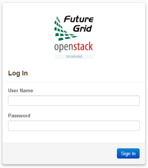
After a successful login, you will see the Overview page as shown
below. This page provides a summary of your current and recent usage
and provides links to various other pages. Most of the tasks you will
perform are done via the menu on the lower left and will be described
below. One thing to note is that on the left, your current project is
displayed. If you have multiple FutureGrid projects, you can change
which of them is your current project. All of the information
displayed and actions that you take apply to your current project. So
in the screen shot below, the quota and usage apply to the current
project you have selected and no information about your other projects
is shown.
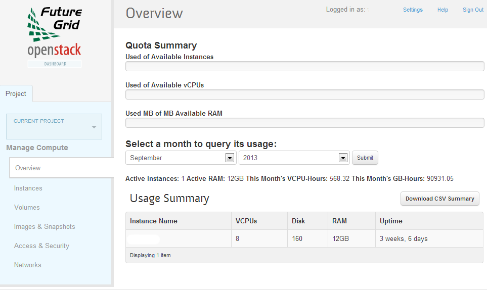
4.1. Managing Virtual Machine Instances
One of the main activities you’ll be performing in this web interface
is the management of virtual machines, or instances. You do this via
the Instances page that is reachable from the menu in the lower left
of the Overview page. An example Instances page is shown below. For
instances that you have running, you can click on the name of the
instance to get more information about it and to access the VNC
interface to the console. The dropdown menu to the left of the
instance lets you perform a variety of tasks such as suspending,
terminating, or rebooting the instance or associating a floating IP
address with the instance (see below).
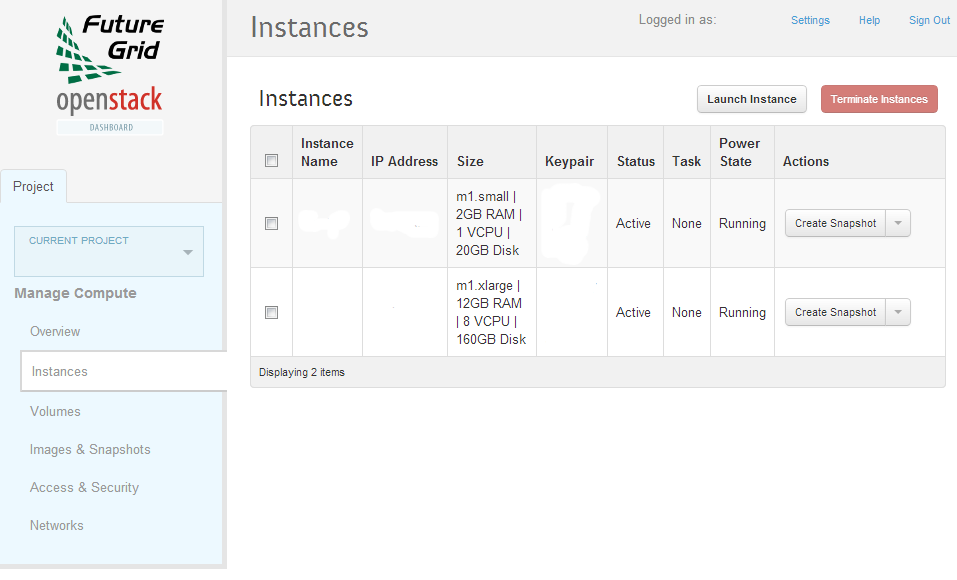
The Instances page also lets you create new virtual machines by using
the ‘Launch Instance’ button in the upper-right. When you click this
button, a dialog window pops up. In the first ‘Details’ tab, you
select the source of the instance, which is either an ‘Image’ or a
‘Snapshot’ (an image created from a running virtual machine). If you
select ‘Image’, the Image dropdown presents a list of virtual machine
images that we have provided, that other FutureGrid users have
uploaded and made public, or images that you have uploaded for
yourself. If you select ‘Snapshot’, the Image dropdown presents a list
of virtual machine images that you have created from your running
virtual machines.
On the Details tab, you also provide a name for this instance (to help
you identify instances that you are running), and select the amount of
resources (Flavor) to allocate to the instance. If you select
different flavors from the Flavor dropdown, their characteristics are
displayed on the right.
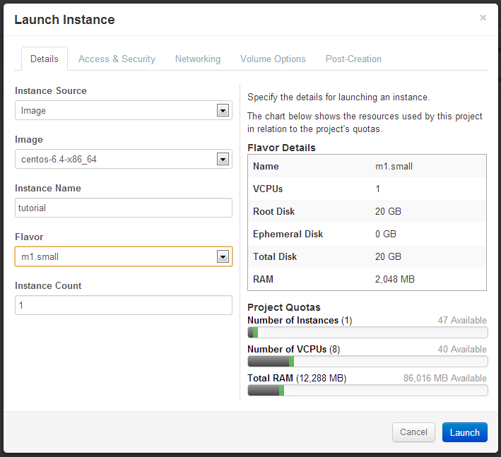
The next tab is ‘Access & Security’ where you select an ssh keypair
that will be inserted into your virtual machine. These keypairs are
synchronized with the keypairs you have in the FutureGrid portal and
you should manage your keypairs there, rather than in this OpenStack
web interface. You will need to select a keypair here to be able to
access an instance created from one of the public images FutureGrid
provides. These images are not configured with a default root password
and you will not be able to login to them without configuring an ssh
key.
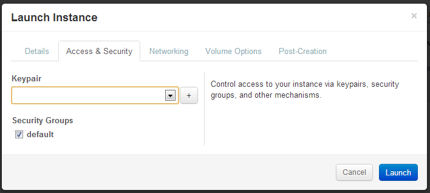
The final tab that you’ll need to use when launching an instance is
the Networking tab. You will need to select the ‘private’ network,
even though there is currently no other option. Once you do this, you
can Launch your instance and the Instances page will show progress as
it starts.
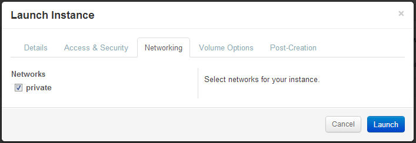
4.2. Snapshots
The instance list page shown above has an option ‘Create Snapshot’
that allows you to save a copy of the disk contents of a running
virtual machine. This allows you to start new virtual machines in the
future that are identical to this one and is an easy way to save any
changes you make to a running virtual machine.
An important note is that for CentOS 6 images, you should run a
command in the VM before taking a snapshot so that the snapshot will
start correctly. The step is to simply execute:
$ rm /etc/udev/rules.d/70-persistent-net.rules
and the reason why this is needed is described in
/root/README_snapshot.txt in the virtual machine image.
4.3. Floating IP Addresses
The private network above assigns an IP address to each virtual
machine that is only valid within the cluster. These virtual machines
can be ssh’ed to from the login node and can be accessed using VNC in
the OpenStack web interface. In addition, these virtual machines can
contact systems on the Internet via a NAT mechanism provided by
OpenStack.
If you want your instances to be reachable from the internet, you will
need to associate a public IP address to them. This is accomplished in
two steps. The first step is to allocate a floating IP address to your
project using the ‘Access & Security’ page reachable from the
bottom-left menu.
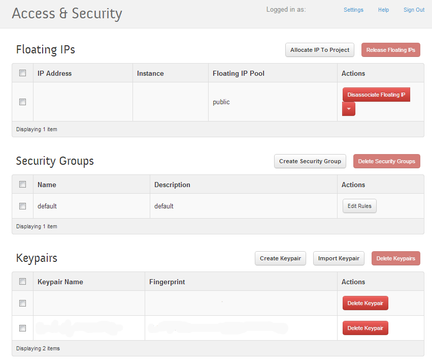
At the top of this page, you can allocate and deallocate floating IP
addresses, which are public IP addresses reachable from outside
systems. When you allocate an IP address, the dialog below
appears. There is currently only one floating IP pool (‘public’) to
allocate from, so you just select ‘Allocate IP’.
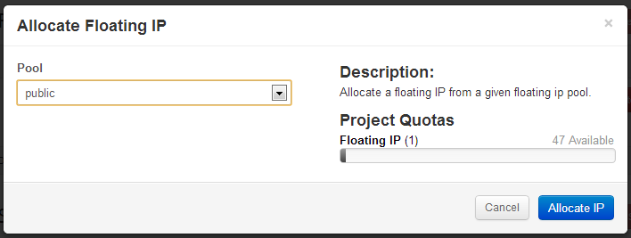
After you have an available floating IP address, the second step is to
allocate it to a running virtual machine. You can do this either via
the drop down menu to the left of the IP address in the page above or
via the drop down menu to the right of the virtual machine on the
Instance page.
4.4. Accessing Your Virtual Machine
There are two ways you can access your virtual machine. One way is you
can access the console using Virtual Network Computing (VNC) in the
OpenStack web interface. If you navigate to the Instances page using
the left menu and select your instance, you will see a tab VNC that
has this console.
The second way is via ssh. When you created your virtual machine, you
specified an ssh key to load in to the VM. OpenStack injects this ssh
key into the VM and you can use the corresponding private ssh key to
login to the VM. You will need to either ssh -Ato alamo.futuregrid.org
and then to the private IP of your VM or you will need to associate a
floating, public IP to your VM and you can then ssh directly to your
VM using this public IP from anywhere.
An important note is that many of the images that we provide do not
allow you to ssh into the root account. Instead, you ssh into a
different account and use passwordless sudo for any administrative
tasks. For Ubuntu images, you ssh in to the ‘ubuntu’ account. For
CentOS and Fedora 18 and older Fedora images, you ssh in to the
‘ec2-user’ and for Fedora 19 and newer, you ssh in to the ‘fedora’
user.
4.5. Uploading an Image
As you saw above, FutureGrid provides a number of generic Linux images
that you can customize for your needs. However, you may wish to use a
different Linux distribution than we provide or you may have an
existing image that you want to use. In this case, you can upload your
image using the web interface.
There are two steps to uploading an image. The first step is to make
the image available via HTTP and the second is to instruct OpenStack
to download that image. If your image is not already available via
HTTP, a simple way to do this is to use an HTTP server that is
provided as part of Python. When you start this server from a
directory, it provides access to all files in that directory. You can:
$ ssh alamo.futuregrid.org ... alamo$ mkdir /N/work/$USER/images
alamo$ cd /N/work/$USER/images # place your image(s) into this
directory alamo$ python -m SimpleHTTPServer 8002 Serving HTTP on
0.0.0.0 port 8002 ... Next, in the OpenStack web interface, navigate
to “Images and Snapshots” in the left menu. In the upper right of that
page, you will see a button “Create Image”. Click on that button and
fill out the dialog similar to below.
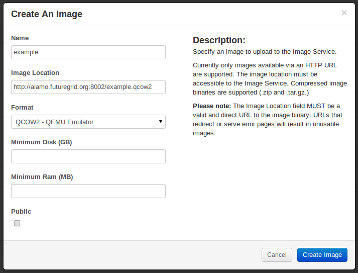
Create An Image The Name is the human-readable name you want to
display for this image. The location is where OpenStack should
retrieve the image from. In this example, that location is our
SimpleHTTPServer on port 8002 of alamo.futuregrid.org. The path in the
location URL is the relative path to the image from the directory that
you ran SimpleHTTPServer out of. The format is the type of image file
you are uploading. The minimum disk and minimum RAM are the minimum
amount of each that this virtual machine image needs to be able to
run. These are optional and you do not need to specify them if this
image can run in the smallest VM flavor (m1.tiny). Finally, you can
have the image be available to all users or not. Once you finish
filling out this form, click “Create Image” and you should see
OpenStack access your HTTP server and then this image will be included
in your list of images in OpenStack.
Once your image has been uploaded, Ctrl-C your Python SimpleHTTPServer
to stop it.
4.6. Managing Volumes
OpenStack supports the creation of volumes that are independent of
instances and images. These volumes are managed via the ‘Volumes’ page
that is accessible via the lower-left menu.
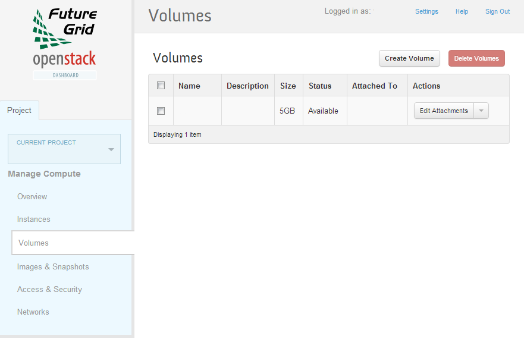
The general process is to create a volume, attach that volume to a
running instance, mount the volume in the instance, format the volume,
use the volume in the instance, and then detach the volume. The data
in the volume will be available to whatever instance you attach it to
in the future.
An important note is that a volume can only be attached to one
instance at a time so it cannot be directly used as, say, a shared
filesystem among your instances.
4.7. EC2 Interface
OpenStack on Alamo and Hotel supports the EC2 interface for
programmatic access. You can download your EC2 credentials from the
web interface via the Settings link in the upper-right of any page and
then ‘EC2 Credentials’ in the lower-left menu. Note that you have
different EC2 credentials for each FutureGrid project you participate
in. If you are a member of multiple FutureGrid projects, we request
that you use the corresponding EC2 credentials when starting virtual
machines for a project.
Note that the S3 interface is not currently available since the
OpenStack Swift object store has not been deployed on Alamo at this
time.
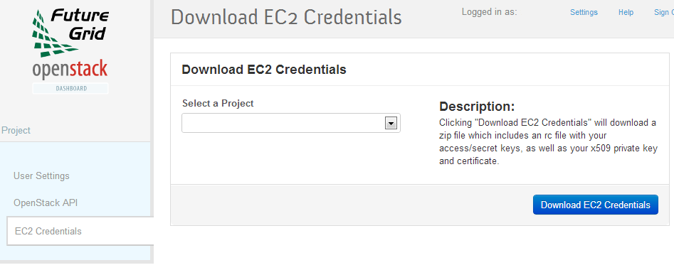
4.8. OpenStack REST Interfaces
The OpenStack REST Interfaces are not currently supported on Alamo and Hotel. It is non-trivial to enable secure connections for these interfaces on both the client and the server side and the EC2 interfaces support almost all of the user-facing functionality of the native OpenStack interfaces.
Login or register to post comments